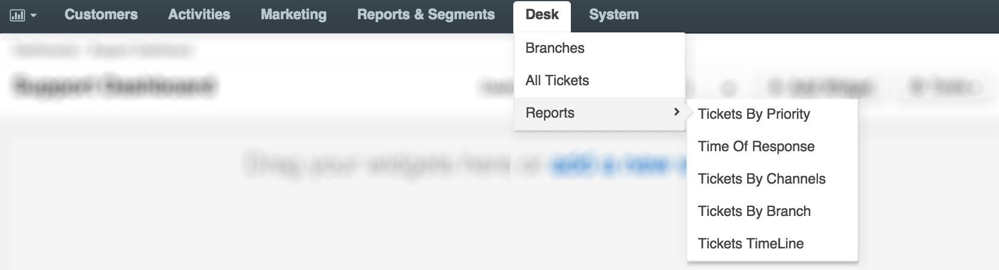
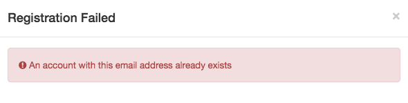
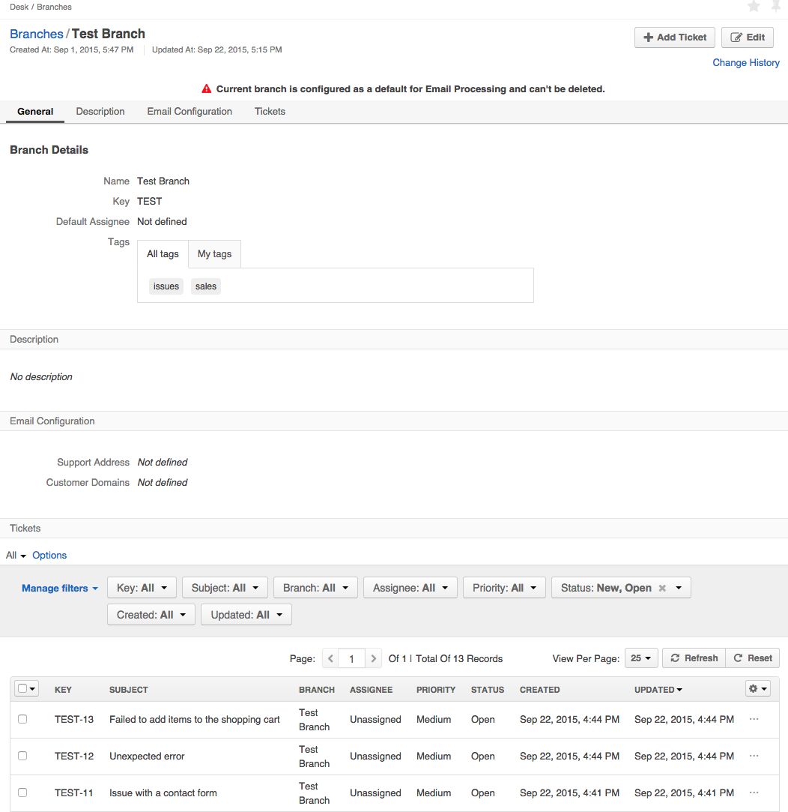
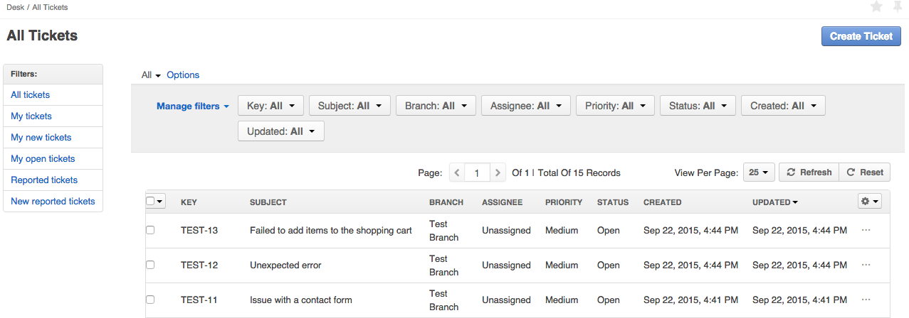
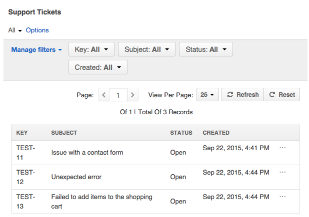
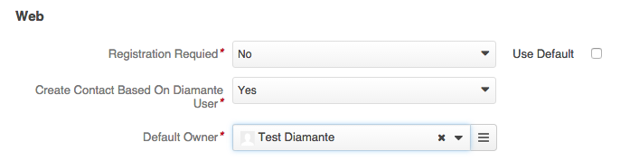

OroCRM
DiamanteDesk offers seamless integration with the open-source OroCRM, providing efficient and simple ticket management tool. Therefore, DiamanteDesk can be installed as a help desk extension to OroCRM. The following guide describes various options of DiamanteDesk installation as an extension to OroCRM and all the functionality related to this integration.
When installed on the basis of the OroCRM, DiamanteDesk functionality is available at the Desk top menu.

This menu provides fast and easy access to the general functionality and data of the DiamanteDesk application, specifically to:
Installation
Prior to installing DiamanteDesk as an extension to OroCRM make sure that you have properly installed OroCRM.
Installation via Oro Marketplace
Navigate to System > Package Manager to install it from the OroCRM Marketplace. For the detailed instruction on how to add an extension to your OroCRM instance, follow this link.
Installation via Composer
As of 2.0.0 release we do not support composer installation. OroCRM integration package should only be installed via Oro Marketplace.
DiamaneteDesk Contacts in OroCRM
In the Oro platform all the contacts related to any business activities are saved at Customers > Contacts. Please refer to the Oro documentation to learn more about contacts in OroCRM. Due to the DiamanteDesk integration with Oro, when a customer registers on the support portal to make a request or report an issue regarding the supported entity (online store, blog, etc.), the provided credentials are added both to the DaiamnteDesk and to the OroCRM contacts. To learn how to configure this option, refer to the Configuration section of this article.
When a user registeres on the portal, the system automatically scans the contact database by the existing emails. If none of the emails match the provided credentials, a new contact is created based on the data provided by the user. If an account with the same email has been previously registered in the system, the following warning message is displayed:

The identical procedure occurs when OroCRM administartor creates a new DiamanteDesk user from the admin panel at Customers > Contacts > Create Customer.
This feature can be disabled at System > Configuration > DiamanteDesk.
Tickets in OroCRM
When DiamanteDesk is installed on the basis of the OroCRM, administrators can view the tickets submitted to the system in the following sections:
- Desk > Branches. Tickets in the DiamanteDesk are grouped into the Branches. Creating separate branches enables our Clients to group tickets according to the requests of specific users, locations, issues or according to the Channel the ticket came from. Open the required branch to see all the tickets that belong to it.

- Desk > All Tickets. Tickets can be accessed directly at the Tickets section. They are not grouped according to any category on this screen an can be filtered according to the ticket Key, Subject, Branch, Assignee, Priority, Status, or time period when it was Created or Updated.

Customers > Accounts. Account records referred to as Accounts in OroCRM are created to collect and analyze the information on customer activity of a person or group of people belonging to a certain company or organization. Administrators can view all the tickets created or updated by the users belonging to this account at the read-only Support Tickets grid in the Additional Information section. It displays general ticket information, such as ticket Key, Subject, Status, Reporter and date and time when it was updated.
Customers > Contacts. The Customers screen contains information about all the customers who created tickets at the DiamanteDesk portal. Administrators can view all the tickets created or updated by the certain customer at the read-only Support Tickets grid in the Additional Information section. It displays general ticket information, such as ticket Key, Subject, Status and date and time when it was created.

Configuration
As previously mentioned, when DiamanteDesk is installed on the basis of OroCRM, all the contacts created through the DiamanteDesk support portal are automatically added to the OroCRM contact database. To learn more about contacts in DiamanteDesk, refer to the corresponding section of the User Guide.
To configure this option, navigate to System > Configuration. The Configuration screen opens. From the System Configuration panel on the left select DiamanteDesk > Channels. The Channels screen opens. Head over to the Web section.

To automatically create an Oro contact from the DiamanteDesk contact, select Yes option in the Create Contact Based On Diamante User and provide a user who is going to be responsible for this action in the Default Owner field.